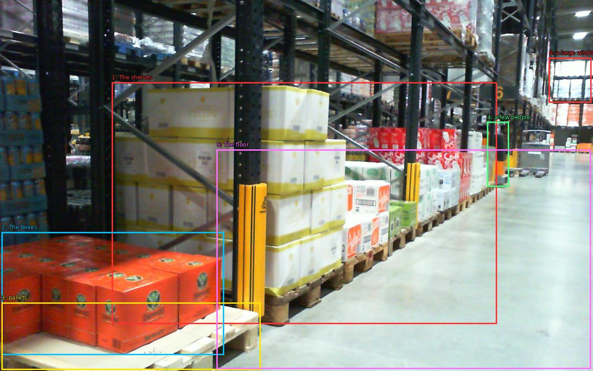

The image shows a large warehouse with multiple rows of shelves. The shelves are filled with boxes of various sizes and colors, including red, white, and yellow. The boxes are stacked on wooden pallets and are arranged in neat rows. The warehouse appears to be well-stocked with various items, and there are a few people visible in the background. The floor is made of concrete and there is a large window on the right side of the image, allowing natural light to enter the space.

Original · Caption raw · Grounding raw · Koordinate
Številke so lokalni ID regije. Dolge slikovne oznake so skrajšane; spodaj so celotne fraze. Napovedane regije se lahko prekrivajo ali opisujejo skupine.
| ID | Celotna fraza | bbox xyxy |
|---|---|---|
| 1 | The shelves | [241.27999877929688, 177.1999969482422, 1072.0, 698.7999877929688] |
| 2 | The boxes | [3.1999998092651367, 500.3999938964844, 483.1999816894531, 765.2000122070312] |
| 3 | pallets | [3.1999998092651367, 652.4000244140625, 562.5599975585938, 797.2000122070312] |
| 4 | a few people | [1051.52001953125, 262.8000183105469, 1098.8800048828125, 402.8000183105469] |
| 5 | The floor | [467.8399963378906, 322.0, 1275.52001953125, 795.6000366210938] |
| 6 | a large window | [1184.6400146484375, 124.4000015258789, 1276.7999267578125, 221.1999969482422] |